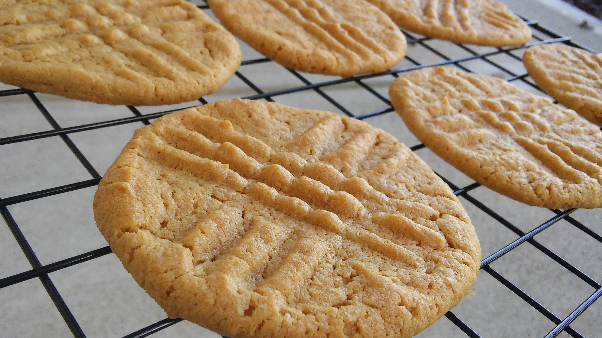

Peanut Butter Cookies
Changed your mind? Go Back

Quick and easy cookies with a peanut-buttery taste!
With only 4 Ingredients, these cookies are to die for!
Ingredients
- 1 cup peanut butter
- 1 cup white sugar
- 1 egg
- 1 teaspoon baking soda
Instructions
- Preheat oven to 325 degrees F (165 degrees C).
- In a medium bowl, mix together the peanut butter,
sugar, egg, and baking soda until well blended.
Roll dough into 1 inch balls, and place on ungreased
cookie sheets.
- Bake for 6 to 8 minutes in the preheated oven. Cool
on cookie sheets until set, before transferring to
wire racks to cool completely.